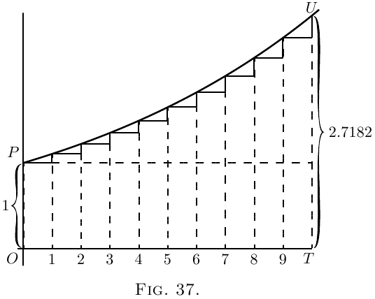
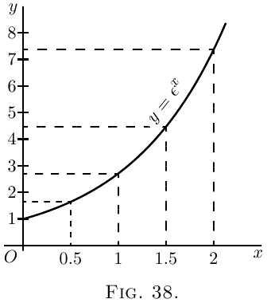
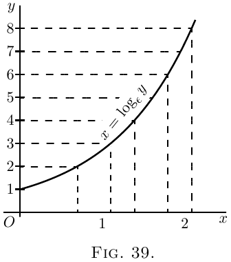
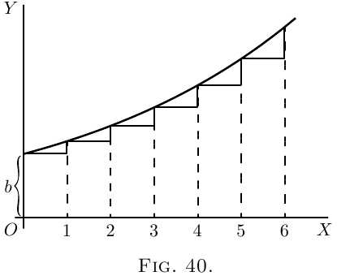
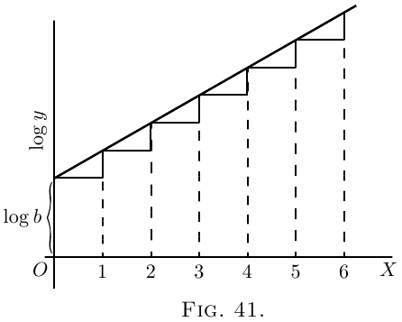

On true Compound Interest and the Law of Organic Growth
Let there be a quantity growing in such a way that
the increment of its growth, during a given time,
shall always be proportional to its own magnitude.
This resembles the process of reckoning interest on
money at some fixed rate; for the bigger the capital,
the bigger the amount of interest on it in a given
time.
Now we must distinguish clearly between two
cases, in our calculation, according as the calculation
is made by what the arithmetic books call “simple
interest,” or by what they call “compound interest.”
For in the former case the capital remains fixed,
while in the latter the interest is added to the capital,
which therefore increases by successive additions.
At simple interest. Consider a concrete case.
Let the capital at start be £$100$, and let the rate
of interest be $10$ per cent. per annum. Then the
increment to the owner of the capital will be £$10$
every year. Let him go on drawing his interest
every year, and hoard it by putting it by in a
stocking, or locking it up in his safe. Then, if he
goes on for $10$ years, by the end of that time he will
have received $10$ increments of £$10$ each, or £$100$,
making, with the original £$100$, a total of £$200$ in all.
His property will have doubled itself in $10$ years.
If the rate of interest had been $5$ per cent., he would
have had to hoard for $20$ years to double his property.
If it had been only $2$ per cent., he would have had
to hoard for $50$ years. It is easy to see that if the
value of the yearly interest is $\dfrac{1}{n}$ of the capital, he
must go on hoarding for $n$ years in order to double
his property.
Or, if $y$ be the original capital, and the yearly
interest is $\dfrac{y}{n}$, then, at the end of $n$ years, his property
will be
\[
y + n\dfrac{y}{n} = 2y.
\]
(2) At compound interest. As before, let the owner
begin with a capital of £$100$, earning interest at the
rate of $10$ per cent. per annum; but, instead of
hoarding the interest, let it be added to the capital
each year, so that the capital grows year by year.
Then, at the end of one year, the capital will have
grown to £$110$; and in the second year (still at $10$%)
this will earn £$11$ interest. He will start the third
year with £$121$, and the interest on that will be
£$12$. $2$s .; so that he starts the fourth year with
£$133$. $2$s ., and so on. It is easy to work it out, and
find that at the end of the ten years the total capital
will have grown to £$259$. $7$s . $6$d . In fact, we see that
at the end of each year, each pound will have earned
$\tfrac{1}{10}$ of a pound, and therefore, if this is always added
on, each year multiplies the capital by $\tfrac{11}{10}$; and if
continued for ten years (which will multiply by this
factor ten times over) will multiply the original
capital by $2.59374$. Let us put this into symbols.
Put $y_0$ for the original capital; $\dfrac{1}{n}$ for the fraction
added on at each of the $n$ operations; and $y_n$ for the
value of the capital at the end of the $n$th operation.
Then
\[
y_n = y_0\left(1 + \frac{1}{n}\right)^n.
\]
But this mode of reckoning compound interest once
a year, is really not quite fair; for even during the
first year the £$100$ ought to have been growing. At
the end of half a year it ought to have been at least £$105$,
and it certainly would have been fairer had
the interest for the second half of the year been
calculated on £$105$. This would be equivalent to
calling it $5$% per half-year; with $20$ operations, therefore,
at each of which the capital is multiplied by $\tfrac{21}{20}$.
If reckoned this way, by the end of ten years the
capital would have grown to
£$265$. $6$s . $7$d.; for
\[
(1 + \tfrac{1}{20})^{20} = 2.653.
\]
But, even so, the process is still not quite fair; for,
by the end of the first month, there will be some
interest earned; and a half-yearly reckoning assumes
that the capital remains stationary for six months at
a time. Suppose we divided the year into $10$ parts,
and reckon a one-per-cent. interest for each tenth of
the year. We now have $100$ operations lasting over
the ten years; or
\[
y_n = £100 \left( 1 + \tfrac{1}{100} \right)^{100};
\]
which works out to
£$270$. $9$s . $7\frac{1}{2}$d.
Even this is not final. Let the ten years be divided
into $1000$ periods, each of $\frac{1}{100}$ of a year; the interest
being $\frac{1}{10}$ per cent. for each such period; then
\[
y_n = £100 \left( 1 + \tfrac{1}{1000} \right)^{1000};
\]
which works out to
£$271$. $13$s . $10$d .
Go even more minutely, and divide the ten years
into $10,000$ parts, each $\frac{1}{1000}$ of a year, with interest
at $\frac{1}{100}$ of $1$ per cent. Then
\[
y_n = £100 \left( 1 + \tfrac{1}{10,000} \right)^{10,000}
\]
which amounts to
£$271$. $16$s . $3\frac{1}{2}$d.
Finally, it will be seen that what we are trying to
find is in reality the ultimate value of the expression
$\left(1 + \dfrac{1}{n}\right)^n$, which, as we see, is greater than $2$; and
which, as we take $n$ larger and larger, grows closer
and closer to a particular limiting value. However
big you make $n$, the value of this expression grows
nearer and nearer to the figure
\[
2.71828\ldots
\]
a number never to be forgotten.
Let us take geometrical illustrations of these things.
In Figure 36, $OP$ stands for the original value. $OT$ is
the whole time during which the value is growing.
It is divided into $10$ periods, in each of which there is
an equal step up. Here $\dfrac{dy}{dx}$ is a constant; and if each
step up is $\frac{1}{10}$ of the original $OP$, then, by $10$ such
steps, the height is doubled. If we had taken $20$ steps,
each of half the height shown, at the end the height
would still be just doubled. Or $n$ such steps, each
of $\dfrac{1}{n}$ of the original height $OP$, would suffice to
double the height. This is the case of simple interest.
Here is $1$ growing till it becomes $2$.

In Figure 37, we have the corresponding illustration of
the geometrical progression. Each of the successive
ordinates is to be $1 + \dfrac{1}{n}$, that is, $\dfrac{n+1}{n}$ times as high as
its predecessor. The steps up are not equal, because
each step up is now $\dfrac{1}{n}$ of the ordinate at that part of
the curve. If we had literally $10$ steps, with $\left(1 + \frac{1}{10} \right)$
for the multiplying factor, the final total would be
$(1 + \tfrac{1}{10})^{10}$ or $2.594$ times the original $1$. But if only
we take $n$ sufficiently large (and the corresponding
$\dfrac{1}{n}$ sufficiently small), then the final value $\left(1 + \dfrac{1}{n}\right)^n$ to
which unity will grow will be $2.71828$.

Epsilon. To this mysterious number $2.7182818$
etc., the mathematicians have assigned as a symbol
the Greek letter $\epsilon$ (pronounced epsilon). All schoolboys
know that the Greek letter $\pi$ (called pi) stands
for $3.141592$ etc.; but how many of them know that
epsilon means $2.71828$? Yet it is an even more
important number than $\pi$!
What, then, is epsilon?
Suppose we were to let $1$ grow at simple interest
till it became $2$; then, if at the same nominal rate of
interest, and for the same time, we were to let $1$ grow
at true compound interest, instead of simple, it would
grow to the value epsilon.
This process of growing proportionately, at every
instant, to the magnitude at that instant, some people
call a logarithmic rate of growing. Unit logarithmic
rate of growth is that rate which in unit time will
cause $1$ to grow to $2.718281$. It might also be
called the organic rate of growing: because it is
characteristic of organic growth (in certain circumstances)
that the increment of the organism in a
given time is proportional to the magnitude of the
organism itself.
If we take $100$ per cent. as the unit of rate,
and any fixed period as the unit of time, then the
result of letting $1$ grow arithmetically at unit rate,
for unit time, will be $2$, while the result of letting $1$
grow logarithmically at unit rate, for the same time,
will be $2.71828\ldots$,.
A little more about Epsilon. We have seen that
we require to know what value is reached by the
expression $\left(1 + \dfrac{1}{n}\right)^n$, when $n$ becomes indefinitely
great. Arithmetically, here are tabulated a lot of
values (which anybody can calculate out by the help
of an ordinary table of logarithms) got by assuming
$n = 2$; $n = 5$; $n = 10$; and so on, up to $n = 10,000$.
\begin{alignat*}{2}
&(1 + \tfrac{1}{2})^2 &&= 2.25. \\
&(1 + \tfrac{1}{5})^5 &&= 2.488. \\
&(1 + \tfrac{1}{10})^{10} &&= 2.594. \\
&(1 + \tfrac{1}{20})^{20} &&= 2.653. \\
&(1 + \tfrac{1}{100})^{100} &&= 2.705. \\
&(1 + \tfrac{1}{1000})^{1000} &&= 2.7169. \\
&(1 + \tfrac{1}{10,000})^{10,000} &&= 2.7181.
\end{alignat*}
It is, however, worth while to find another way of
calculating this immensely important figure.
Accordingly, we will avail ourselves of the binomial
theorem, and expand the expression $\left(1 + \dfrac{1}{n}\right)^n$ in that
well-known way.
The binomial theorem gives the rule that
\begin{align*}
(a + b)^n &= a^n + n \dfrac{a^{n-1} b}{1!} + n(n - 1) \dfrac{a^{n-2} b^2}{2!} \\
& \phantom{= a^n\ } + n(n -1)(n - 2) \dfrac{a^{n-3} b^3}{3!} + \text{etc}. \\
\end{align*}
Putting $a = 1$ and $b = \dfrac{1}{n}$, we get
\begin{align*}
\left(1 + \dfrac{1}{n}\right)^n
&= 1 + 1 + \dfrac{1}{2!} \left(\dfrac{n - 1}{n}\right) + \dfrac{1}{3!} \dfrac{(n - 1)(n - 2)}{n^2} \\
&\phantom{= 1 + 1\ } + \dfrac{1}{4!} \dfrac{(n - 1)(n - 2)(n - 3)}{n^3} + \text{etc}.
\end{align*}
Now, if we suppose $n$ to become indefinitely great,
say a billion, or a billion billions, then $n - 1$, $n - 2$,
and $n - 3$, etc., will all be sensibly equal to $n$; and
then the series becomes
\[
\epsilon = 1 + 1 + \dfrac{1}{2!} + \dfrac{1}{3!} + \dfrac{1}{4!} + \text{etc}.\ldots
\]
By taking this rapidly convergent series to as
many terms as we please, we can work out the sum to
any desired point of accuracy. Here is the working
for ten terms:
| | $1.000000$ |
| dividing by 1 | $1.000000$ |
| dividing by 2 | $0.500000$ |
| dividing by 3 | $0.166667$ |
| dividing by 4 | $0.041667$ |
| dividing by 5 | $0.008333$ |
| dividing by 6 | $0.001389$ |
| dividing by 7 | $0.000198$ |
| dividing by 8 | $0.000025$ |
| dividing by 9 | $0.000002$ |
| Total | $2.718281$ |
$\epsilon$ is incommensurable with $1$, and resembles $\pi$ in
being an interminable non-recurrent decimal.
The Exponential Series. We shall have need of yet
another series.
Let us, again making use of the binomial theorem,
expand the expression $\left(1 + \dfrac{1}{n}\right)^{nx}$, which is the same
as $\epsilon^x$ when we make $n$ indefinitely great.
\begin{align*}
\epsilon^x
&= 1^{nx} + nx \frac{1^{nx-1} \left(\dfrac{1}{n}\right)}{1!}
+ nx(nx - 1) \frac{1^{nx - 2} \left(\dfrac{1}{n}\right)^2}{2!} \\
& \phantom{= 1^{nx}\ }
+ nx(nx - 1)(nx - 2) \frac{1^{nx-3} \left(\dfrac{1}{n}\right)^3}{3!}
+ \text{etc}.\\
&= 1 + x + \frac{1}{2!} · \frac{n^2x^2 - nx}{n^2}
+ \frac{1}{3!} · \frac{n^3x^3 - 3n^2x^2 + 2nx}{n^3} + \text{etc}. \\
&= 1 + x + \frac{x^2 -\dfrac{x}{n}}{2!}
+ \frac{x^3 - \dfrac{3x^2}{n} + \dfrac{2x}{n^2}}{3!} + \text{etc}.
\end{align*}
But, when $n$ is made indefinitely great, this simplifies down to the following:
\[
\epsilon^x
= 1 + x + \frac{x^2}{2!} + \frac{x^3}{3!} + \frac{x^4}{4!} + \text{etc.}\dots
\]
This series is called the exponential series.
The great reason why $\epsilon$ is regarded of importance
is that $\epsilon^x$ possesses a property, not possessed by any
other function of $x$, that when you differentiate it
its value remains unchanged; or, in other words, its
differential coefficient is the same as itself. This can
be instantly seen by differentiating it with respect
to $x$, thus:
\begin{align*}
\frac{d(\epsilon^x)}{dx}
&= 0 + 1 + \frac{2x}{1 · 2} + \frac{3x^2}{1 · 2 · 3} + \frac{4x^3}{1 · 2 · 3 · 4} \\
&\phantom{= 0 + 1 + \frac{2x}{1 · 2} + \frac{3x^2}{1 · 2 · 3}\ } + \frac{5x^4}{1 · 2 · 3 · 4 · 5} + \text{etc}. \\
or
&= 1 + x + \frac{x^2}{1 · 2} + \frac{x^3}{1 · 2 · 3} + \frac{x^4}{1 · 2 · 3 · 4} + \text{etc}.,
\end{align*}
which is exactly the same as the original series.
Now we might have gone to work the other way,
and said: Go to; let us find a function of $x$, such
that its differential coefficient is the same as itself.
Or, is there any expression, involving only powers
of $x$, which is unchanged by differentiation? Accordingly;
let us assume as a general expression that
\begin{align*}
y &= A + Bx + Cx^2 + Dx^3 + Ex^4 + \text{etc}.,\\
\end{align*}
(in which the coefficients $A$, $B$, $C$, etc. will have to be
determined), and differentiate it.
\begin{align*}
\dfrac{dy}{dx} &= B + 2Cx + 3Dx^2 + 4Ex^3 + \text{etc}.
\end{align*}
Now, if this new expression is really to be the same
as that from which it was derived, it is clear that
$A$ must $=B$; that $C=\dfrac{B}{2}=\dfrac{A}{1· 2}$; that $D = \dfrac{C}{3} = \dfrac{A}{1 · 2 · 3}$;
that $E = \dfrac{D}{4} = \dfrac{A}{1 · 2 · 3 · 4}$, etc.
The law of change is therefore that
\[
y = A\left(1 + \dfrac{x}{1} + \dfrac{x^2}{1 · 2} + \dfrac{x^3}{1 · 2 · 3} + \dfrac{x^4}{1 · 2 · 3 · 4} + \text{etc}.\right).
\]
If, now, we take $A = 1$ for the sake of further
simplicity, we have
\[
y = 1 + \dfrac{x}{1} + \dfrac{x^2}{1 · 2} + \dfrac{x^3}{1 · 2 · 3} + \dfrac{x^4}{1 · 2 · 3 · 4} + \text{etc}.
\]
Differentiating it any number of times will give
always the same series over again.
If, now, we take the particular case of $A=1$, and
evaluate the series, we shall get simply
\begin{align*}
\text{when } x &= 1,\quad & y &= 2.718281 \text{ etc.}; & \text{that is, } y &= \epsilon; \\
\text{when } x &= 2,\quad & y &=(2.718281 \text{ etc.})^2; & \text{that is, } y &= \epsilon^2; \\
\text{when } x &= 3,\quad & y &=(2.718281 \text{ etc.})^3; & \text{that is, } y &= \epsilon^3;
\end{align*}
and therefore
\[
\text{when } x=x,\quad y=(2.718281 \text{ etc}.)^x;\quad\text{that is, } y=\epsilon^x,
\]
thus finally demonstrating that
\[
\epsilon^x = 1 + \dfrac{x}{1} + \dfrac{x^2}{1·2} + \dfrac{x^3}{1· 2· 3} + \dfrac{x^4}{1· 2· 3· 4} + \text{etc}.
\]
[Note.–How to read exponentials . For the benefit
of those who have no tutor at hand it may be of use
to state that $\epsilon^x$ is read as “epsilon to the eksth power;”
or some people read it “exponential eks.” So $\epsilon^{pt}$ is
read “epsilon to the pee-teeth-power” or “exponential
pee tee.” Take some similar expressions:–Thus, $\epsilon^{-2}$ is
read “epsilon to the minus two power” or “exponential
minus two.” $\epsilon^{-ax}$ is read “epsilon to the minus
ay-eksth” or “exponential minus ay-eks.”]
Of course it follows that $\epsilon^y$ remains unchanged if
differentiated with respect to $y$. Also $\epsilon^{ax}$, which is
equal to $(\epsilon^a)^x$, will, when differentiated with respect
to $x$, be $a\epsilon^{ax}$, because $a$ is a constant.
Natural or Naperian Logarithms.
Another reason why $\epsilon$ is important is because it
was made by Napier, the inventor of logarithms, the
basis of his system. If $y$ is the value of $\epsilon^x$, then $x$
is the logarithm, to the base $\epsilon$, of $y$. Or, if
\begin{align*}
y &= \epsilon^x, \\
\text{then}\; x &= \log_\epsilon y.
\end{align*}
The two curves plotted in Fig. 38 and Fig. 39 represent
these equations.
The points calculated are:
For Fig. 38:
| $x$ | $0$ | $0.5$ | $1$ | $1.5$ | $2$ |
| $y$ | $1$ | $1.65$ | $2.71$ | $4.50$ | $7.39$ |
For Fig. 39:
| xy$ | $1$ | $2$ | $3$ | $4$ | $8$ |
| xx$ | $0$ | $0.69$ | $1.10$ | $1.39$ | $2.08$ |


It will be seen that, though the calculations yield
different points for plotting, yet the result is identical.
The two equations really mean the same thing.
As many persons who use ordinary logarithms,
which are calculated to base $10$ instead of base $\epsilon$, are
unfamiliar with the “natural” logarithms, it may be
worth while to say a word about them. The ordinary
rule that adding logarithms gives the logarithm of
the product still holds good; or
\[
\log_\epsilon a + \log_\epsilon b = \log_\epsilon ab.
\]
Also the rule of powers holds good;
\[
n × \log_\epsilon a = \log_\epsilon a^n.
\]
But as $10$ is no longer the basis, one cannot multiply
by $100$ or $1000$ by merely adding $2$ or $3$ to the
index. One can change the natural logarithm to
the ordinary logarithm simply by multiplying it by
$0.4343$; or
\begin{align*}
\log_{10} x &= 0.4343 × \log_{\epsilon} x, \\
\text{ and conversely,}\;
\log_{\epsilon} x &= 2.3026 × \log_{10} x.
\end{align*}
A Useful Table of “Naperian Logarithms”
(Also called Natural Logarithms or Hyperbolic Logarithms)
| Number |
$\log_{\epsilon}$ |
|
Number |
$\log_{\epsilon}$ |
| $1 $ | $0.0000$ | | $6$ | $1.7918$ |
| $1.1$ | $0.0953$ | | $7$ | $1.9459$ |
| $1.2$ | $0.1823$ | | $8$ | $2.0794$ |
| $1.5$ | $0.4055$ | | $9$ | $2.1972$ |
| $1.7$ | $0.5306$ | | $10$ | $2.3026$ |
| $2.0$ | $0.6931$ | | $20$ | $2.9957$ |
| $2.2$ | $0.7885$ | | $50$ | $3.9120$ |
| $2.5$ | $0.9163$ | | $100$ | $4.6052$ |
| $2.7$ | $0.9933$ | | $200$ | $5.2983$ |
| $2.8$ | $1.0296$ | | $500$ | $6.2146$ |
| $3.0$ | $1.0986$ | | $1000$ | $6.9078$ |
| $3.5$ | $1.2528$ | | $2000$ | $7.6009$ |
| $4.0$ | $1.3863$ | | $5000$ | $8.5172$ |
| $4.5$ | $1.5041$ | | $10 000$ | $9.2103$ |
| $5.0$ | $1.6094$ | | $20 000$ | $9.9035$ |
Exponential and Logarithmic Equations.
Now let us try our hands at differentiating certain
expressions that contain logarithms or exponentials.
Take the equation:
\[
y = \log_\epsilon x.
\]
First transform this into
\[
\epsilon^y = x,
\]
whence, since the differential of $\epsilon^y$ with regard to $y$ is
the original function unchanged (see here),
\[
\frac{dx}{dy} = \epsilon^y,
\]
and, reverting from the inverse to the original function,
\[
\frac{dy}{dx}
= \frac{1}{\ \dfrac{dx}{dy}\ }
= \frac{1}{\epsilon^y}
= \frac{1}{x}.
\]
Now this is a very curious result. It may be
written
\[
\frac{d(\log_\epsilon x)}{dx} = x^{-1}.
\]
Note that $x^{-1}$ is a result that we could never have
got by the rule for differentiating powers. That rule is to multiply by the power, and reduce the
power by $1$. Thus, differentiating $x^3$ gave us $3x^2$;
and differentiating $x^2$ gave $2x^1$. But differentiating
$x^0$ does not give us $x^{-1}$ or $0 × x^{-1}$, because $x^0$ is itself
$= 1$, and is a constant. We shall have to come back
to this curious fact that differentiating $\log_\epsilon x$ gives us
$\dfrac{1}{x}$ when we reach the chapter on integrating.
Now, try to differentiate
\begin{align*}
y &= \log_\epsilon(x+a),\\
\text{that is}\; \epsilon^y &= x+a;
\end{align*}
we have $\dfrac{d(x+a)}{dy} = \epsilon^y$, since the differential of $\epsilon^y$
remains $\epsilon^y$.
This gives
\begin{align*}
\frac{dx}{dy} &= \epsilon^y = x+a; \\
\end{align*}
hence, reverting to the original function,
we get
\begin{align*}
\frac{dy}{dx} &= \frac{1}{\;\dfrac{dx}{dy}\;} = \frac{1}{x+a}.
\end{align*}
Next try
\begin{align*}
y &= \log_{10} x.
\end{align*}
First change to natural logarithms by multiplying
by the modulus $0.4343$. This gives us
\begin{align*}
y &= 0.4343 \log_\epsilon x; \\
\text{whence}\;
\frac{dy}{dx} &= \frac{0.4343}{x}.
\end{align*}
The next thing is not quite so simple. Try this:
\[
y = a^x.
\]
Taking the logarithm of both sides, we get
\begin{align*}
\log_\epsilon y &= x \log_\epsilon a, \\
\text{ or}\;
x = \frac{\log_\epsilon y}{\log_\epsilon a}
&= \frac{1}{\log_\epsilon a} × \log_\epsilon y.
\end{align*}
Since $\dfrac{1}{\log_\epsilon a}$ is a constant, we get
\[
\frac{dx}{dy}
= \frac{1}{\log_\epsilon a} × \frac{1}{y}
= \frac{1}{a^x × \log_\epsilon a};
\]
hence, reverting to the original function.
\[
\frac{dy}{dx} = \frac{1}{\;\dfrac{dx}{dy}\;} = a^x × \log_\epsilon a.
\]
We see that, since
\[
\frac{dx}{dy} × \frac{dy}{dx} =1\quad\text{and}\quad
\frac{dx}{dy} = \frac{1}{y} × \frac{1}{\log_\epsilon a},\quad
\frac{1}{y} × \frac{dy}{dx} = \log_\epsilon a.
\]
We shall find that whenever we have an expression
such as $\log_\epsilon y =$ a function of $x$, we always have
$\dfrac{1}{y}\, \dfrac{dy}{dx} =$ the differential coefficient of the function of $x$,
so that we could have written at once, from
$\log_\epsilon y = x \log_\epsilon a$,
\[
\frac{1}{y}\, \frac{dy}{dx}
= \log_\epsilon a\quad\text{and}\quad
\frac{dy}{dx} = a^x \log_\epsilon a.
\]
Let us now attempt further examples.
Examples
(1) $y=\epsilon^{-ax}$. Let $-ax=z$; then $y=\epsilon^z$.
\[
\frac{dy}{dz} = \epsilon^z;\quad
\frac{dz}{dx} = -a;\quad\text{hence}\quad
\frac{dy}{dx} = -a\epsilon^{-ax}.
\]
Or thus:
\[
\log_\epsilon y = -ax;\quad
\frac{1}{y}\, \frac{dy}{dx} = -a;\quad
\frac{dy}{dx} = -ay = -a\epsilon^{-ax}.
\]
(2) $y=\epsilon^{\frac{x^2}{3}}$. Let $\dfrac{x^2}{3}=z$; then $y=\epsilon^z$.
\[
\frac{dy}{dz} = \epsilon^z;\quad
\frac{dz}{dx} = \frac{2x}{3};\quad
\frac{dy}{dx} = \frac{2x}{3}\, \epsilon^{\frac{x^2}{3}}.
\]
Or thus:
\[
\log_\epsilon y = \frac{x^2}{3};\quad
\frac{1}{y}\, \frac{dy}{dx} = \frac{2x}{3};\quad
\frac{dy}{dx} = \frac{2x}{3}\, \epsilon^{\frac{x^2}{3}}.
\]
(3) $y = \epsilon^{\frac{2x}{x+1}}$.
\begin{align*}
\log_\epsilon y &= \frac{2x}{x+1},\quad
\frac{1}{y}\, \frac{dy}{dx} = \frac{2(x+1)-2x}{(x+1)^2}; \\
hence
\frac{dy}{dx} &= \frac{2}{(x+1)^2} \epsilon^{\frac{2x}{x+1}}.
\end{align*}
Check by writing $\dfrac{2x}{x+1}=z$.
(4) $y=\epsilon^{\sqrt{x^2+a}}$. $\log_\epsilon y=(x^2+a)^{\frac{1}{2}}$.
\[
\frac{1}{y}\, \frac{dy}{dx} = \frac{x}{(x^2+a)^{\frac{1}{2}}}\quad\text{and}\quad
\frac{dy}{dx} = \frac{x × \epsilon^{\sqrt{x^2+a}}}{(x^2+a)^{\frac{1}{2}}}.
\]
For if $(x^2+a)^{\frac{1}{2}}=u$ and $x^2+a=v$, $u=v^{\frac{1}{2}}$,
\[
\frac{du}{dv} = \frac{1}{{2v}^{\frac{1}{2}}};\quad
\frac{dv}{dx} = 2x;\quad
\frac{du}{dx} = \frac{x}{(x^2+a)^{\frac{1}{2}}}.
\]
Check by writing $\sqrt{x^2+a}=z$.
(5) $y=\log(a+x^3)$. Let $(a+x^3)=z$; then $y=\log_\epsilon z$.
\[
\frac{dy}{dz} = \frac{1}{z};\quad
\frac{dz}{dx} = 3x^2;\quad\text{hence}\quad
\frac{dy}{dx} = \frac{3x^2}{a+x^3}.
\]
(6) $y=\log_\epsilon\{{3x^2+\sqrt{a+x^2}}\}$. Let $3x^2 + \sqrt{a+x^2}=z$;
then $y=\log_\epsilon z$.
\begin{align*}
\frac{dy}{dz}
&= \frac{1}{z};\quad \frac{dz}{dx} = 6x + \frac{x}{\sqrt{x^2+a}}; \\
\frac{dy}{dx}
&= \frac{6x + \dfrac{x}{\sqrt{x^2+a}}}{3x^2 + \sqrt{a+x^2}}
= \frac{x(1 + 6\sqrt{x^2+a})}{(3x^2 + \sqrt{x^2+a}) \sqrt{x^2+a}}.
\end{align*}
(7) $y=(x+3)^2 \sqrt{x-2}$.
\begin{align*}
\log_\epsilon y
&= 2 \log_\epsilon(x+3)+ \tfrac{1}{2} \log_\epsilon(x-2). \\
\frac{1}{y}\, \frac{dy}{dx}
&= \frac{2}{(x+3)} + \frac{1}{2(x-2)}; \\
\frac{dy}{dx}
&= (x+3)^2 \sqrt{x-2} \left\{\frac{2}{x+3} + \frac{1}{2(x-2)}\right\}.
\end{align*}
(8) $y=(x^2+3)^3(x^3-2)^{\frac{2}{3}}$.
\begin{align*}
\log_\epsilon y
&= 3 \log_\epsilon(x^2+3) + \tfrac{2}{3} \log_\epsilon(x^3-2); \\
\frac{1}{y}\, \frac{dy}{dx}
&= 3 \frac{2x}{(x^2+3)} + \frac{2}{3} \frac{3x^2}{x^3-2}
= \frac{6x}{x^2+3} + \frac{2x^2}{x^3-2}.
\end{align*}
For if $y=\log_\epsilon(x^2+3)$, let $x^2+3=z$ and $u=\log_\epsilon z$.
\[
\frac{du}{dz} = \frac{1}{z};\quad
\frac{dz}{dx} = 2x;\quad
\frac{du}{dx} = \frac{2x}{x^2+3}.
\]
Similarly, if $v=\log_\epsilon(x^3-2)$, $\dfrac{dv}{dx} = \dfrac{3x^2}{x^3-2}$ and
\[
\frac{dy}{dx}
= (x^2+3)^3(x^3-2)^{\frac{2}{3}}
\left\{ \frac{6x}{x^2+3} + \frac{2x^2}{x^3-2} \right\}.
\]
(9) $y=\dfrac{\sqrt[2]{x^2+a}}{\sqrt[3]{x^3-a}}$.
\begin{align*}
\log_\epsilon y
&= \frac{1}{2} \log_\epsilon(x^2+a) - \frac{1}{3} \log_\epsilon(x^3-a). \\
\frac{1}{y}\, \frac{dy}{dx}
&= \frac{1}{2}\, \frac{2x}{x^2+a} - \frac{1}{3}\, \frac{3x^2}{x^3-a}
= \frac{x}{x^2+a} - \frac{x^2}{x^3-a} \\
and
\frac{dy}{dx}
&= \frac{\sqrt[2]{x^2+a}}{\sqrt[3]{x^3-a}}
\left\{ \frac{x}{x^2+a} - \frac{x^2}{x^3-a} \right\}.
\end{align*}
(10) $y=\dfrac{1}{\log_\epsilon x}$
\[
\frac{dy}{dx}
= \frac{\log_\epsilon x × 0 - 1 × \dfrac{1}{x}}
{\log_\epsilon^2 x}
= -\frac{1}{x \log_\epsilon^2x}.
\]
(11) $y=\sqrt[3]{\log_\epsilon x} = (\log_\epsilon x)^{\frac{1}{3}}$. Let $z=\log_\epsilon x$; $y=z^{\frac{1}{3}}$.
\[
\frac{dy}{dz} = \frac{1}{3} z^{-\frac{2}{3}};\quad
\frac{dz}{dx} = \frac{1}{x};\quad
\frac{dy}{dx} = \frac{1}{3x \sqrt[3]{\log_\epsilon^2 x}}.
\]
(12) $y=\left(\dfrac{1}{a^x}\right)^{ax}$.
\begin{align*}
\log_\epsilon y
&= ax(\log_\epsilon 1 - \log_\epsilon a^x) = -ax \log_\epsilon a^x. \\
\frac{1}{y}\, \frac{dy}{dx}
&= -ax × a^x \log_\epsilon a - a \log_\epsilon a^x. \\
and
\frac{dy}{dx}
&= -\left(\frac{1}{a^x}\right)^{ax}
(x × a^{x+1} \log_\epsilon a + a \log_\epsilon a^x).
\end{align*}
Try now the following exercises.
Exercises XII
(1) Differentiate $y=b(\epsilon^{ax} -\epsilon^{-ax})$.
(2) Find the differential coefficient with respect to $t$
of the expression $u=at^2+2\log_\epsilon t$.
(3) If $y=n^t$, find $\dfrac{d(\log_\epsilon y)}{dt}$.
(4) Show that if $y=\dfrac{1}{b}·\dfrac{a^{bx}}{\log_\epsilon a}$, $\dfrac{dy}{dx}=a^{bx}$.
(5) If $w=pv^n$, find $\dfrac{dw}{dv}$.
Differentiate
(6) $y=\log_\epsilon x^n$.
(7) $y=3\epsilon^{-\frac{x}{x-1}}$.
(8) $y=(3x^2+1)\epsilon^{-5x}$.
(9) $y=\log_\epsilon(x^a+a)$.
(10) $y=(3x^2-1)(\sqrt{x}+1)$.
(11) $y=\dfrac{\log_\epsilon(x+3)}{x+3}$.
(12) $y=a^x × x^a$.
(13) It was shown by Lord Kelvin that the speed of
signalling through a submarine cable depends on the
value of the ratio of the external diameter of the core
to the diameter of the enclosed copper wire. If this
ratio is called $y$, then the number of signals $s$ that can
be sent per minute can be expressed by the formula
\[
s=ay^2 \log_\epsilon \frac{1}{y};
\]
where $a$ is a constant depending on the length and
the quality of the materials. Show that if these are
given, $s$ will be a maximum if $y=1 ÷ \sqrt{\epsilon}$.
(14) Find the maximum or minimum of
\[
y=x^3-\log_\epsilon x.
\]
(15) Differentiate $y=\log_\epsilon(ax\epsilon^x)$.
(16) Differentiate $y=(\log_\epsilon ax)^3$.
Answers
(1) $ab(\epsilon^{ax} + \epsilon^{-ax})$.
(2) $2at + \dfrac{2}{t}$.
(3) $\log_\epsilon n$.
(5) $npv^{n-1}$.
(6) $\dfrac{n}{x}$.
(7) $\dfrac{3\epsilon^{- \frac{x}{x-1}}}{(x - 1)^2}$.
(8) $6x \epsilon^{-5x} - 5(3x^2 + 1)\epsilon^{-5x}$.
(9) $\dfrac{ax^{a-1}}{x^a + a}$.
(10) $\left(\dfrac{6x}{3x^2-1} + \dfrac{1}{2\left(\sqrt x + x\right)}\right) \left(3x^2-1\right)\left(\sqrt x + 1\right)$.
(11) $\dfrac{1 - \log_\epsilon \left(x + 3\right)}{\left(x + 3\right)^2}$.
(12) $a^x\left(ax^{a-1} + x^a \log_\epsilon a\right)$.
(14) Min.: $y = 0.7$ for $x = 0.694$.
(15) $\dfrac{1 + x}{x}$.
(16) $\dfrac{3}{x} (\log_\epsilon ax)^2$.
The Logarithmic Curve.
Let us return to the curve which has its successive
ordinates in geometrical progression, such as that
represented by the equation $y=bp^x$.
We can see, by putting $x=0$, that $b$ is the initial
height of $y$.
Then when
\[
x=1,\quad y=bp;\qquad
x=2,\quad y=bp^2;\qquad
x=3,\quad y=bp^3,\quad \text{etc.}
\]
Also, we see that $p$ is the numerical value of the
ratio between the height of any ordinate and that of
the next preceding it. In Figure 40, we have taken $p$
as $\frac{6}{5}$; each ordinate being $\frac{6}{5}$ as high as the preceding
one.


If two successive ordinates are related together
thus in a constant ratio, their logarithms will have a
constant difference; so that, if we should plot out
a new curve, Figure 41, with values of $\log_\epsilon y$ as ordinates,
it would be a straight line sloping up by equal steps.
In fact, it follows from the equation, that
\begin{align*}
\log_\epsilon y &= \log_\epsilon b + x · \log_\epsilon p, \\
\text{whence }\;
\log_\epsilon y &- \log_\epsilon b = x · \log_\epsilon p.
\end{align*}
Now, since $\log_\epsilon p$ is a mere number, and may be
written as $\log_\epsilon p=a$, it follows that
\[
\log_\epsilon \frac{y}{b}=ax,
\]
and the equation takes the new form
\[
y = b\epsilon^{ax}.
\]
Next →
Main Page ↑